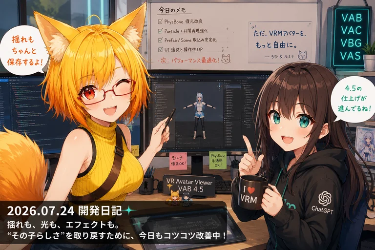

UnityPackageの箱を開けたら、中からシーンまで出てきた日
今日のVR Avatar Viewerは、「このファイルはアバター専用」「これは背景専用」と入口を分ける方向から一歩進んで、Unityで配布されるデータをもっと柔軟に読み取る工事へ。ついでに髪や服の当たり判定も、もう一段細かく直しています。

「読み込みボタン、結局なにを開けばいいの？」
今日の大きな変更は、外部データを取り込む入口の整理です。Unityでは、アバターや小物、背景などが UnityPackage というひとまとめのファイルで配布されることがあります。中身は3Dモデルだけとは限らず、組み立て済みのオブジェクトや、部屋全体の配置情報まで入っていることがあります。
ろひ「背景を読みたい」
ルミナ「Prefabがあります」
ろひ「小物が300個あります」
ルミナ「……Sceneを読みましょう」
Prefabは「組み立て済みのひとつの物体」に向いたデータです。一方、Sceneは部屋やスタジオのように、多数の物体を配置した状態そのものを保存できます。背景をPrefabだけで探すと候補が大量に並ぶことがあるため、Sceneも直接読めるようにする方向で実装が進んでいます。
Unity Editorがなくても、中身を読めるようにする
UnityのSceneやPrefabは、人間が読むと少し独特なYAML形式のテキストとして保存されています。現在の未コミット作業では、このデータをViewer側で読むための仕組みが追加されています。
ここでは VYaml というオープンソースのYAML処理ライブラリも取り込み中です。難しく言えば「Unityが書き出した構造化テキストを解析する道具」ですが、ユーザーから見ると「UnityPackageの中にあるSceneやPrefabをViewer自身が理解できるようにするための裏方」です。
ライセンス表示も同時に追加しており、便利な外部ライブラリだけ借りて、利用条件は忘れる、という事故が起きないようにしています。
アバター、背景、アイテム。同じ入口から、その先だけ変える
午前1時台のコミットでは、UnityPackageやFBXなど外部モデルの取り込み処理と、アイテムの移動・回転・大きさ調整UIが更新されました。
目指しているのは、「まず何を読み込むかを選び、そのあとアバター・背景・アイテムとして適切に扱う」流れです。背景ならSceneを候補にできる。アイテムなら手でつかむように位置を変えられる。アバターなら骨や揺れ物まで読む。入口は共通でも、出口は用途に合わせる設計です。
ルミナ「万能ボタンです」
ろひ「怖い名前だな」
ルミナ「中でちゃんと仕分けます」
ろひ「それなら便利な名前に戻った」
そして髪の当たり判定は、太さまで変化する
もうひとつの本日のコミットは、VAB 4.5の揺れ物再現です。VRChat系アバターで髪や服を揺らす PhysBone には、当たり判定の太さを根元から先端へ変化させる設定があります。
たとえば長い髪なら、根元は太く、毛先へ行くほど細く設定できます。この「途中で太さが変わる情報」を正しく使わないと、頭や体との衝突位置が少しずれ、髪が不自然に浮いたり、逆に体へ入り込んだりします。
今日の修正では、この太さの変化を表すRadiusカーブを衝突判定へ反映する処理が見直されました。画面上では数センチにも満たない差でも、揺れ物ではその数センチが「自然」と「なんか変」の境目になります。
コミットのあとも、取り込み処理は工事中
最新HEADのあとにも、UnityPackage内の静的コンテンツを読む処理、UnityのYAMLを解析する処理、さらにUnity由来のPhysBone情報を取り込む処理とテストが追加されています。
つまり今は、「外部ファイルを開ける」から「開いた中身を、意味まで理解して再現する」段階へ移っているところです。ファイル形式が増えるほど入口は複雑になりますが、ユーザー側では逆に、なるべく迷わず読み込める形へまとめていきます。
今日のまとめ
- UnityPackage・外部モデル取り込みとアイテム操作UIを更新
- 背景向けにScene、単体オブジェクト向けにPrefabを扱える基盤を開発中
- UnityのYAMLデータを読むランタイム処理を追加中
- VYamlを導入し、ライセンス・Noticeも同時に整備
- Unity由来のPhysBone情報を直接取り込む処理を開発中
- VAB 4.5で、髪や服の太さの変化を考慮した衝突判定を修正
本日のひとこと
箱を開けられるようになったら、次は「中身が何なのか」を理解し始めた。
アバター、背景、アイテム。配布方法は違っても、ユーザーがやりたいことは「これをViewerで使いたい」という一点です。今日の開発は、その一言をできるだけ素直に受け止められる入口を作る一日になりました。